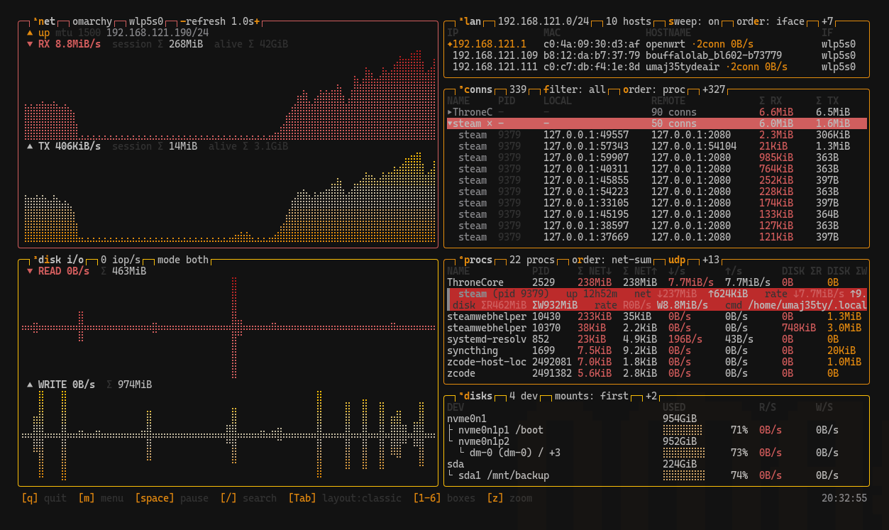
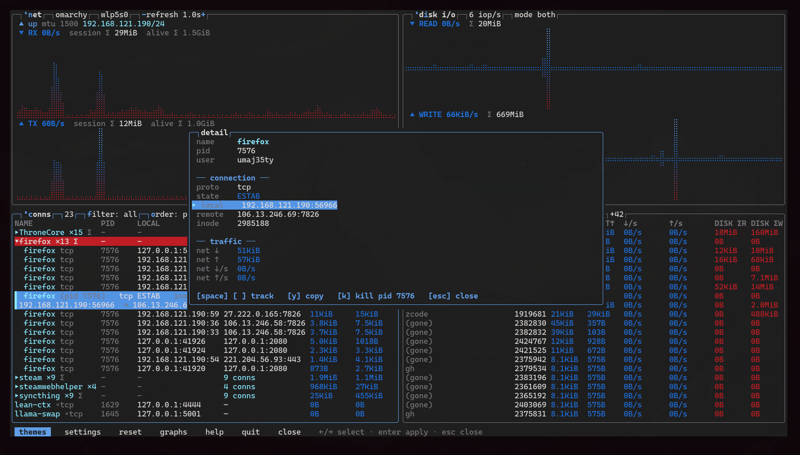
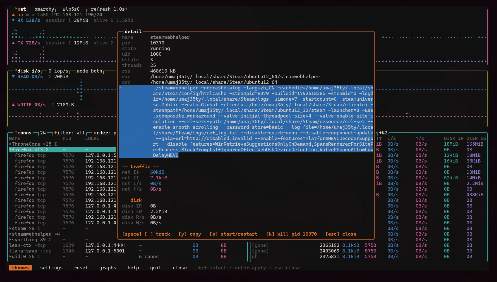
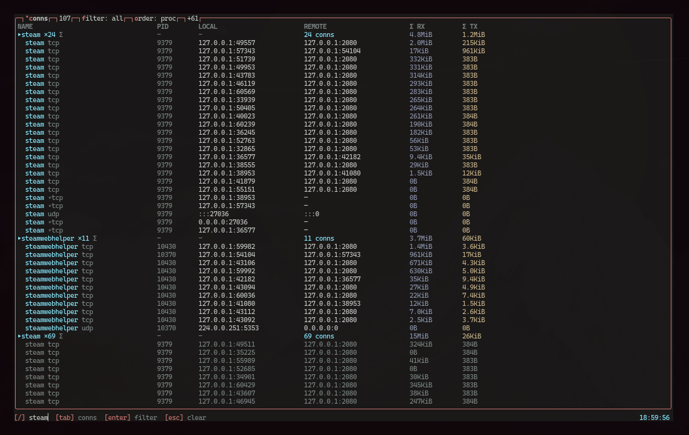
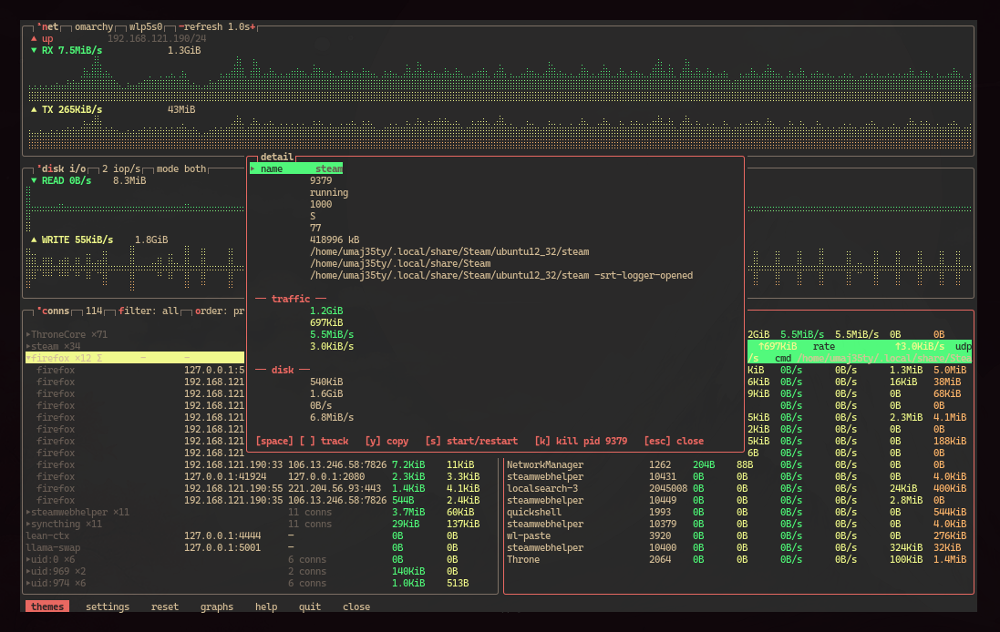
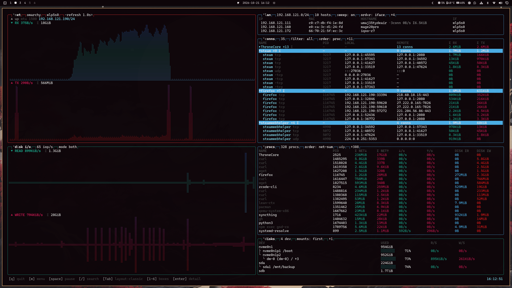
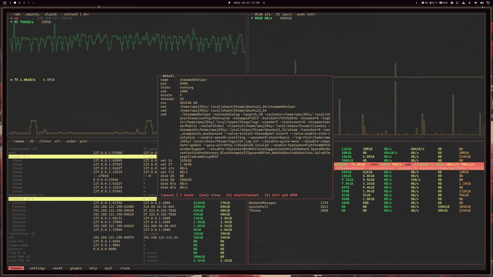
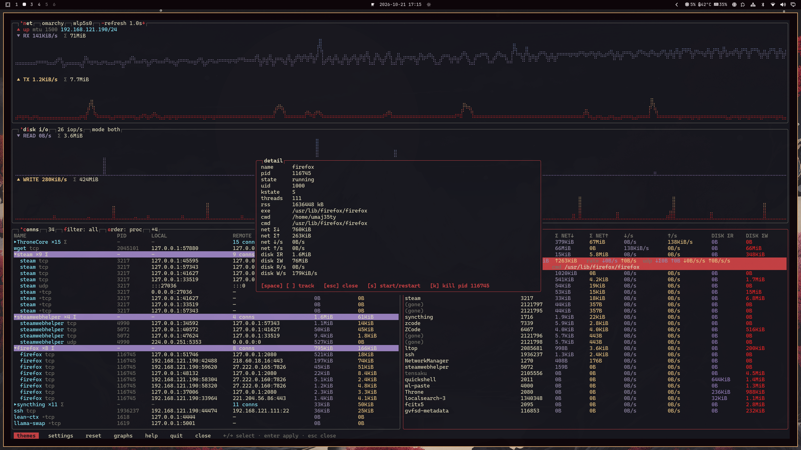

全部真实截图，非摆拍——点开看大图。

Tab 循环 #1Steam 下载进行中：NET 图表爬升（RX 8.8MiB/s）、LAN 邻居在线、CONNS 按进程折叠 （steam ×50，组 Σ 高亮）、PROCS 每进程整场网络+磁盘列、DISKS 设备树带容量条。

enterfirefox 的一条连接开在详情面板：协议与状态、本地/远端端点、inode、流量 Σ 与速率。
面板内：space/t 追踪置顶，y 复制任意字段
（OSC 52——ssh 下也直达本地剪贴板），k 终止。下方退出的进程灰显保留
（标 (gone)），总量还在。

Tab 循环 #3steamwebhelper 开在详情面板：uid、内核状态、线程数、RSS、exe/cwd——完整捕获的命令行，
选中段高亮可 y 复制；下方 traffic/disk 分组，整盒在 tall 布局上放大。

z 与 /CONNS 全屏缩放（z）加实时搜索（/ steam，页脚显示当前过滤）：
107 条连接折成进程组——steam ×24、steamwebhelper ×11、steam ×69——组头各带 Σ，UDP 行有
标签且由 eBPF 助手计量。

↑↓ 与 y详情面板把进程的身份、流量、磁盘数字分组；↑↓ 移动字段光标，
y 把选中值复制到剪贴板（OSC 52，不依赖 X11）。主题菜单
（m）在后面候着。

早期全宽截图：盲文吞吐图表、带流量的 LAN 邻居、按组 Σ 折叠的连接、每进程会话账本、磁盘树。

Tab 循环 #2图表横贯上方、表格在下——进程开在详情面板，带完整命令行、逐连接 UDP 分解，主题菜单在背后。

窄终端的单列布局：CONNS 按进程分组排序、组头带总量、黄色被追踪行跨重排不丢。
--follow-themeSakura → Tokyo Night → Gruvbox → Hackerman → Sakura，全程实时：加
--follow-theme 后 Omarchy 桌面切主题，运行中的 ltop 跟着变色，无需重启。
任何 btop 主题文件也可直接加载：ltop --theme ~/my.theme。